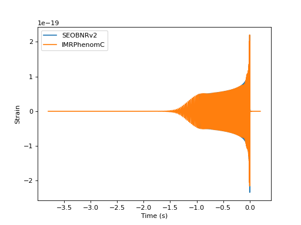
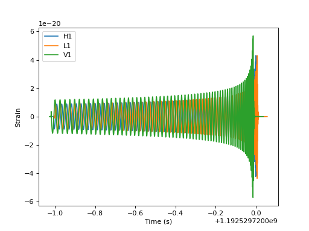
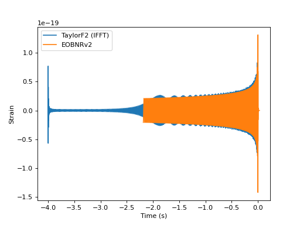
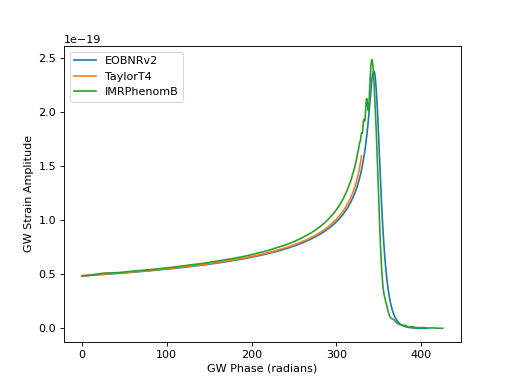
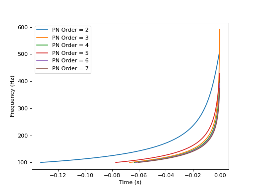

Waveforms¶
What waveforms can I generate?¶
from pycbc.waveform import td_approximants, fd_approximants
# List of td approximants that are available
print(td_approximants())
# List of fd approximants that are currently available
print(fd_approximants())
# Note that these functions only print what is available for your current
# processing context. If a waveform is implemented in CUDA or OpenCL, it will
# only be listed when running under a CUDA or OpenCL Scheme.
$ python ../examples/waveform/what_waveform.py
['TaylorT1', 'TaylorT2', 'TaylorT3', 'SpinTaylorT1', 'SpinTaylorT4', 'SpinTaylorT5', 'PhenSpinTaylor', 'PhenSpinTaylorRD', 'EOBNRv2', 'EOBNRv2HM', 'TEOBResum_ROM', 'SEOBNRv1', 'SEOBNRv2', 'SEOBNRv2_opt', 'SEOBNRv3', 'SEOBNRv3_pert', 'SEOBNRv3_opt', 'SEOBNRv3_opt_rk4', 'SEOBNRv4', 'SEOBNRv4_opt', 'SEOBNRv4P', 'SEOBNRv4PHM', 'SEOBNRv2T', 'SEOBNRv4T', 'SEOBNRv4_ROM_NRTidalv2', 'SEOBNRv4_ROM_NRTidalv2_NSBH', 'HGimri', 'IMRPhenomA', 'IMRPhenomB', 'IMRPhenomC', 'IMRPhenomD', 'IMRPhenomD_NRTidalv2', 'IMRPhenomNSBH', 'IMRPhenomHM', 'IMRPhenomPv2', 'IMRPhenomPv2_NRTidal', 'IMRPhenomPv2_NRTidalv2', 'TaylorEt', 'TaylorT4', 'EccentricTD', 'SpinDominatedWf', 'NR_hdf5', 'NRSur7dq2', 'NRSur7dq4', 'SEOBNRv4HM', 'NRHybSur3dq8', 'IMRPhenomXAS', 'IMRPhenomXHM', 'IMRPhenomPv3', 'IMRPhenomPv3HM', 'IMRPhenomXP', 'IMRPhenomXPHM', 'TEOBResumS', 'IMRPhenomT', 'IMRPhenomTHM', 'IMRPhenomTP', 'IMRPhenomTPHM', 'TaylorF2', 'SEOBNRv1_ROM_EffectiveSpin', 'SEOBNRv1_ROM_DoubleSpin', 'SEOBNRv2_ROM_EffectiveSpin', 'SEOBNRv2_ROM_DoubleSpin', 'EOBNRv2_ROM', 'EOBNRv2HM_ROM', 'SEOBNRv2_ROM_DoubleSpin_HI', 'SEOBNRv4_ROM', 'SEOBNRv4HM_ROM', 'IMRPhenomD_NRTidal', 'SpinTaylorF2', 'TaylorF2NL', 'PreTaylorF2', 'SpinTaylorF2_SWAPPER']
['EccentricFD', 'TaylorF2', 'TaylorF2Ecc', 'TaylorF2NLTides', 'TaylorF2RedSpin', 'TaylorF2RedSpinTidal', 'SpinTaylorF2', 'EOBNRv2_ROM', 'EOBNRv2HM_ROM', 'SEOBNRv1_ROM_EffectiveSpin', 'SEOBNRv1_ROM_DoubleSpin', 'SEOBNRv2_ROM_EffectiveSpin', 'SEOBNRv2_ROM_DoubleSpin', 'SEOBNRv2_ROM_DoubleSpin_HI', 'Lackey_Tidal_2013_SEOBNRv2_ROM', 'SEOBNRv4_ROM', 'SEOBNRv4HM_ROM', 'SEOBNRv4_ROM_NRTidal', 'SEOBNRv4_ROM_NRTidalv2', 'SEOBNRv4_ROM_NRTidalv2_NSBH', 'SEOBNRv4T_surrogate', 'IMRPhenomA', 'IMRPhenomB', 'IMRPhenomC', 'IMRPhenomD', 'IMRPhenomD_NRTidal', 'IMRPhenomD_NRTidalv2', 'IMRPhenomNSBH', 'IMRPhenomHM', 'IMRPhenomP', 'IMRPhenomPv2', 'IMRPhenomPv2_NRTidal', 'IMRPhenomPv2_NRTidalv2', 'SpinTaylorT4Fourier', 'SpinTaylorT5Fourier', 'NRSur4d2s', 'IMRPhenomXAS', 'IMRPhenomXHM', 'IMRPhenomPv3', 'IMRPhenomPv3HM', 'IMRPhenomXP', 'IMRPhenomXPHM', 'SpinTaylorF2_SWAPPER', 'TaylorF2NL', 'PreTaylorF2', 'multiband', 'TaylorF2_INTERP', 'SpinTaylorT5', 'SEOBNRv1_ROM_EffectiveSpin_INTERP', 'SEOBNRv1_ROM_DoubleSpin_INTERP', 'SEOBNRv2_ROM_EffectiveSpin_INTERP', 'SEOBNRv2_ROM_DoubleSpin_INTERP', 'EOBNRv2_ROM_INTERP', 'EOBNRv2HM_ROM_INTERP', 'SEOBNRv2_ROM_DoubleSpin_HI_INTERP', 'SEOBNRv4_ROM_INTERP', 'SEOBNRv4HM_ROM_INTERP', 'SEOBNRv4', 'SEOBNRv4P', 'IMRPhenomC_INTERP', 'IMRPhenomD_INTERP', 'IMRPhenomPv2_INTERP', 'IMRPhenomD_NRTidal_INTERP', 'IMRPhenomPv2_NRTidal_INTERP', 'IMRPhenomHM_INTERP', 'IMRPhenomPv3HM_INTERP', 'IMRPhenomXHM_INTERP', 'IMRPhenomXPHM_INTERP', 'SpinTaylorF2_INTERP', 'TaylorF2NL_INTERP', 'PreTaylorF2_INTERP', 'SpinTaylorF2_SWAPPER_INTERP']
Plotting Time Domain Waveforms¶
import pylab
from pycbc.waveform import get_td_waveform
for apx in ['SEOBNRv2', 'IMRPhenomC']:
hp, hc = get_td_waveform(approximant=apx,
mass1=10,
mass2=10,
spin1z=0.9,
delta_t=1.0/4096,
f_lower=40)
pylab.plot(hp.sample_times, hp, label=apx)
pylab.ylabel('Strain')
pylab.xlabel('Time (s)')
pylab.legend()
pylab.show()
(Source code, png, hires.png, pdf)
{kind=link}
{kind=link}

Generating one waveform in multiple detectors¶
import pylab
from pycbc.waveform import get_td_waveform
from pycbc.detector import Detector
apx = 'SEOBNRv4'
# NOTE: Inclination runs from 0 to pi, with poles at 0 and pi
# coa_phase runs from 0 to 2 pi.
hp, hc = get_td_waveform(approximant=apx,
mass1=10,
mass2=10,
spin1z=0.9,
spin2z=0.4,
inclination=1.23,
coa_phase=2.45,
delta_t=1.0/4096,
f_lower=40)
det_h1 = Detector('H1')
det_l1 = Detector('L1')
det_v1 = Detector('V1')
# Choose a GPS end time, sky location, and polarization phase for the merger
# NOTE: Right ascension and polarization phase runs from 0 to 2pi
# Declination runs from pi/2. to -pi/2 with the poles at pi/2. and -pi/2.
end_time = 1192529720
declination = 0.65
right_ascension = 4.67
polarization = 2.34
hp.start_time += end_time
hc.start_time += end_time
signal_h1 = det_h1.project_wave(hp, hc, right_ascension, declination, polarization)
signal_l1 = det_l1.project_wave(hp, hc, right_ascension, declination, polarization)
signal_v1 = det_v1.project_wave(hp, hc, right_ascension, declination, polarization)
pylab.plot(signal_h1.sample_times, signal_h1, label='H1')
pylab.plot(signal_l1.sample_times, signal_l1, label='L1')
pylab.plot(signal_v1.sample_times, signal_v1, label='V1')
pylab.ylabel('Strain')
pylab.xlabel('Time (s)')
pylab.legend()
pylab.show()
(Source code, png, hires.png, pdf)
{kind=link}
{kind=link}

Calculating the match between waveforms¶
from pycbc.waveform import get_td_waveform
from pycbc.filter import match
from pycbc.psd import aLIGOZeroDetHighPower
f_low = 30
sample_rate = 4096
# Generate the two waveforms to compare
hp, hc = get_td_waveform(approximant="EOBNRv2",
mass1=10,
mass2=10,
f_lower=f_low,
delta_t=1.0/sample_rate)
sp, sc = get_td_waveform(approximant="TaylorT4",
mass1=10,
mass2=10,
f_lower=f_low,
delta_t=1.0/sample_rate)
# Resize the waveforms to the same length
tlen = max(len(sp), len(hp))
sp.resize(tlen)
hp.resize(tlen)
# Generate the aLIGO ZDHP PSD
delta_f = 1.0 / sp.duration
flen = tlen//2 + 1
psd = aLIGOZeroDetHighPower(flen, delta_f, f_low)
# Note: This takes a while the first time as an FFT plan is generated
# subsequent calls are much faster.
m, i = match(hp, sp, psd=psd, low_frequency_cutoff=f_low)
print('The match is: {:.4f}'.format(m))
$ python ../examples/waveform/match_waveform.py
The match is: 0.9534
Plotting a TD and FD waveform together in the TD¶
# Plot a time domain and fourier domain waveform together in the time domain.
# Note that without special cleanup the Fourier domain waveform will exhibit
# the Gibb's phenomenon. (http://en.wikipedia.org/wiki/Gibbs_phenomenon)
import pylab
from pycbc import types, fft, waveform
# Get a time domain waveform
hp, hc = waveform.get_td_waveform(approximant="EOBNRv2",
mass1=6, mass2=6, delta_t=1.0/4096, f_lower=40)
# Get a frequency domain waveform
sptilde, sctilde = waveform. get_fd_waveform(approximant="TaylorF2",
mass1=6, mass2=6, delta_f=1.0/4, f_lower=40)
# FFT it to the time-domain
tlen = int(1.0 / hp.delta_t / sptilde.delta_f)
sptilde.resize(tlen/2 + 1)
sp = types.TimeSeries(types.zeros(tlen), delta_t=hp.delta_t)
fft.ifft(sptilde, sp)
pylab.plot(sp.sample_times, sp, label="TaylorF2 (IFFT)")
pylab.plot(hp.sample_times, hp, label="EOBNRv2")
pylab.ylabel('Strain')
pylab.xlabel('Time (s)')
pylab.legend()
pylab.show()
(Source code, png, hires.png, pdf)
{kind=link}
{kind=link}

Plotting GW phase and amplitude of TD waveform¶
import pylab
from pycbc import waveform
for apx in ['EOBNRv2', 'TaylorT4', 'IMRPhenomB']:
hp, hc = waveform.get_td_waveform(approximant=apx,
mass1=10,
mass2=10,
delta_t=1.0/4096,
f_lower=40)
hp, hc = hp.trim_zeros(), hc.trim_zeros()
amp = waveform.utils.amplitude_from_polarizations(hp, hc)
phase = waveform.utils.phase_from_polarizations(hp, hc)
pylab.plot(phase, amp, label=apx)
pylab.ylabel('GW Strain Amplitude')
pylab.xlabel('GW Phase (radians)')
pylab.legend(loc='upper left')
pylab.show()
(Source code, png, hires.png, pdf)
{kind=link}
{kind=link}

Plotting frequency evolution of TD waveform¶
import pylab
from pycbc import waveform
for phase_order in [2, 3, 4, 5, 6, 7]:
hp, hc = waveform.get_td_waveform(approximant='SpinTaylorT4',
mass1=10, mass2=10,
phase_order=phase_order,
delta_t=1.0/4096,
f_lower=100)
hp, hc = hp.trim_zeros(), hc.trim_zeros()
amp = waveform.utils.amplitude_from_polarizations(hp, hc)
f = waveform.utils.frequency_from_polarizations(hp, hc)
pylab.plot(f.sample_times, f, label="PN Order = %s" % phase_order)
pylab.ylabel('Frequency (Hz)')
pylab.xlabel('Time (s)')
pylab.legend(loc='upper left')
pylab.show()
(Source code, png, hires.png, pdf)
{kind=link}
{kind=link}
